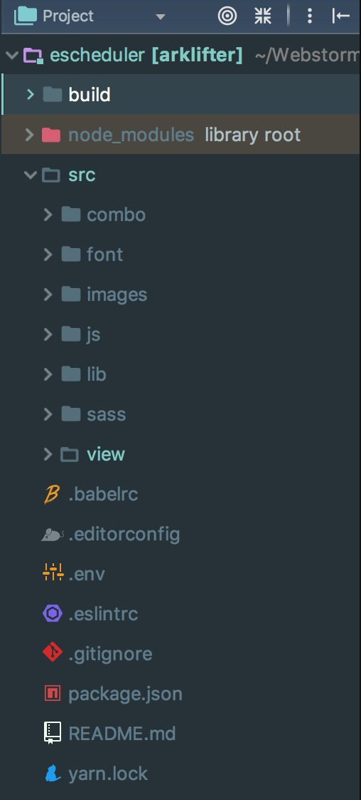
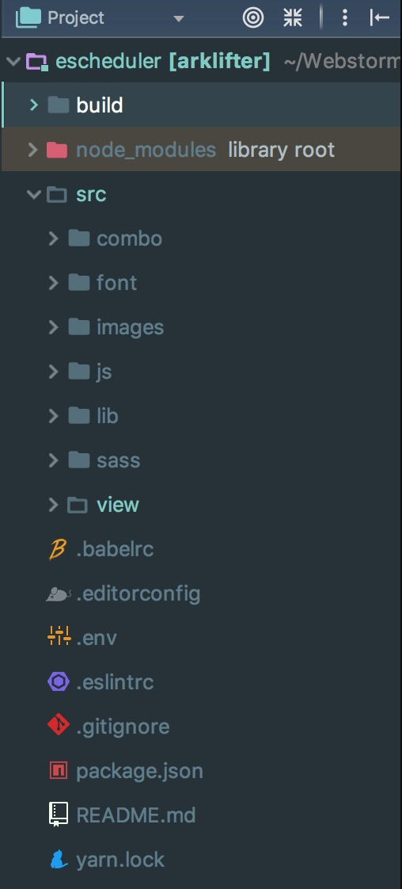

产品介绍
产品介绍产品介绍产品介绍产品介绍产品介绍产品介绍产品介绍产品介绍产品介绍产品介绍产品介绍产品介绍产品介绍产品介绍产品介绍产品介绍产品介绍产品介绍产品介绍产品介绍产品介绍产品介绍产品介绍产品介绍产品介绍产品介绍产品介绍产品介绍产品介绍产品介绍产品介绍产品介绍产品介绍产品介绍产品介绍产品介绍产品介绍产品介绍  aaaaaa
产品介绍产品介绍产品介绍产品介绍产品介绍产品介绍产品介绍产品介绍产品介绍产品介绍产品介绍产品介绍产品介绍产品介绍产品介绍产品介绍产品介绍产品介绍产品介绍产品介绍产品介绍产品介绍产品介绍产品介绍产品介绍产品介绍产品介绍产品介绍产品介绍产品介绍产品介绍产品介绍产品介绍产品介绍产品介绍产品介绍产品介绍产品介绍  aaaaaa